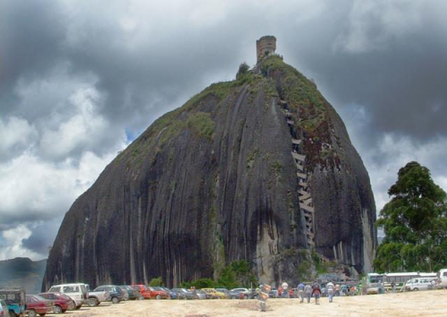
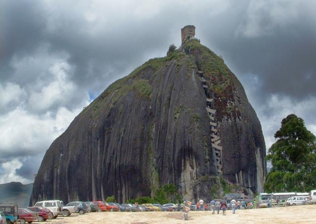
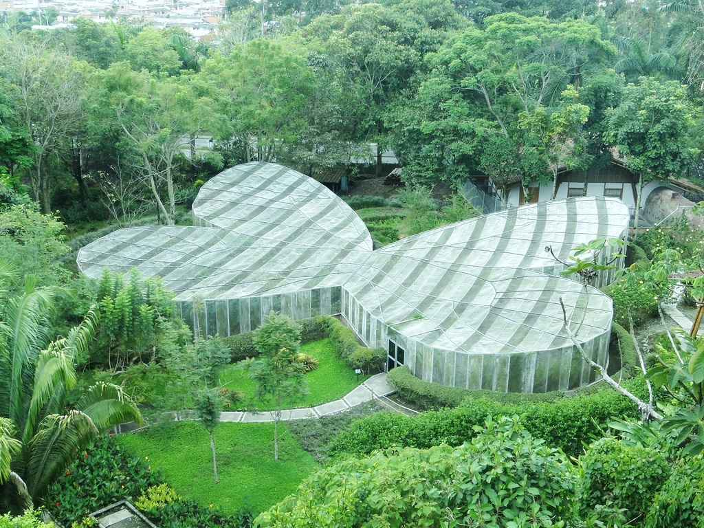
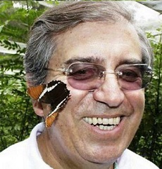

Turismo, Viaje Seguro.
 




El Mariposario
El Jardín Botánico del Quindío es una organización no gubernamental, creada en 1979 como fundación sin ánimo de lucro, con la participación de miembros de la Organización Oikos, la Universidad del Quindío y el Club de Jardinería de Armenia. Está estructurado con tres grandes objetivos: la conservación ecológica, la investigación científica y la educación ambiental. Es además un reconocido centro de turismo de naturaleza, en el que nos esmeramos en preservar la belleza de los diferentes paisajes.
Es además un reconocido centro de turismo de naturaleza, en el que nos esmeramos en preservar la belleza de los diferentes paisajes. Como jardín botánico tenemos varias colecciones y exhibiciones de plantas, que podrá conocer en detalle en esta página y con ocasión de su visita. Es además un reconocido centro de turismo de naturaleza, en el que nos esmeramos en preservar la belleza de los diferentes paisajes. Como jardín botánico tenemos varias colecciones y exhibiciones de plantas, que podrá conocer en detalle en esta página y con ocasión de su visita. Queremos sí destacar la Colección Nacional de Palmas, que agrupa casi todas las especies nativas de Colombia de esta familia, por lo que ha tenido el jardín un notable reconocimiento internacional.
Creemos que la naturaleza funciona de una manera integral, en estrecha relación de los organismos vivos entre sí y los elementos naturales como el suelo, el agua y el clima, por lo cual tenemos un bello y famoso mariposario, un zoológico de insectos, tres sitios para el avistamiento de aves, un museo de Geología y suelos, el Museo del Túnel de la Línea, un museo etnobotánico de palmas y muchas otras atracciones naturales. Dentro de nuestra filosofía de acceso a la comunidad, muchas instituciones educativas de la región y del país, participan con sus alumnos en proyectos académicos y de formación en temas científicos.
¿Cómo surgió el mariposario?
Yo me dediqué a visitar jardines botánicos por todo el mundo y veía que en cada país el Estado ayudaba estos sitios, pero en Colombia es muy difícil conseguir apoyo de este tipo, por lo que sabía que tenía que ingeniarme algo para atraer a la gente.

Alberto Gómez Mejía tuvo la visión de crear un jardín botánico, que se convirtió en un referente, pues la fundación Jardín Botánico del Quindío es hoy, después de 35 años, uno de los más importantes de Colombia.
¿Cómo empezó el Jardín Botánico del Quindío?
Fue una idea del profesor Jesús Idrobo —qepd—, un botánico que yo invité cuando estaba de alcalde de Armenia en el año 1975, tiempo en el que yo ya me había vinculado a las actividades de ecología, pues desde 1973 era miembro de la Sociedad Colombiana de Ecología, de la que fui presidente y luego vicepresidente.